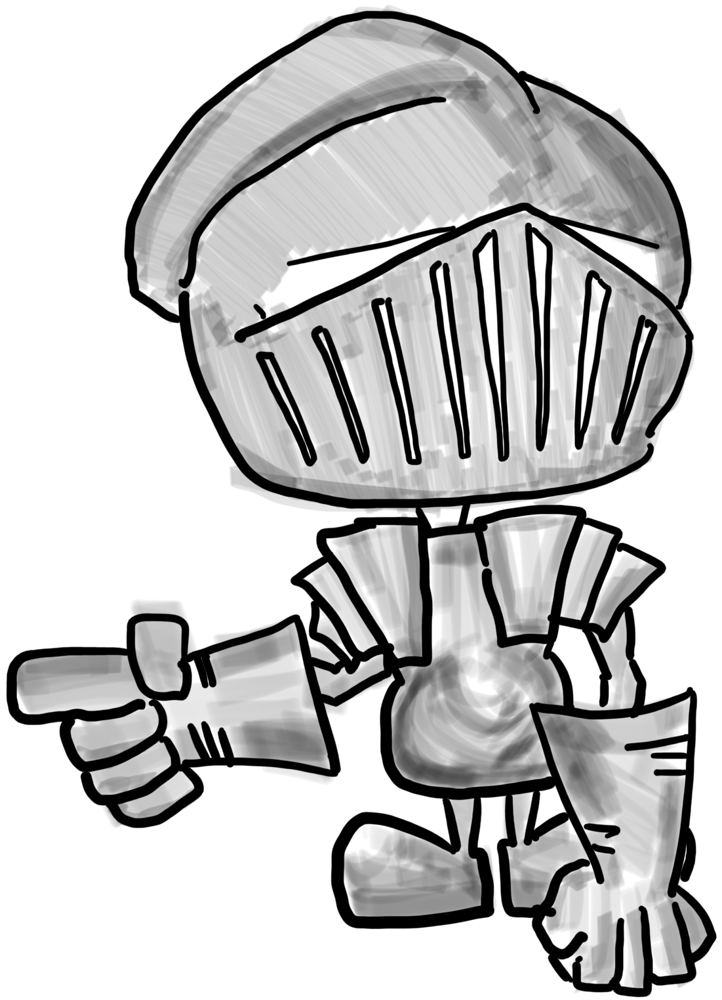

Knight Knight
Follow this shy little Knight in a 2D videogame as he navigates Piraton, meets new friends, and embarks on an adventure to learn why the sea is sick and has disappeared.
Project is seeking collaborators! Please contact if interested